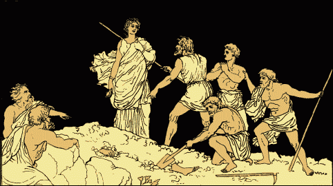
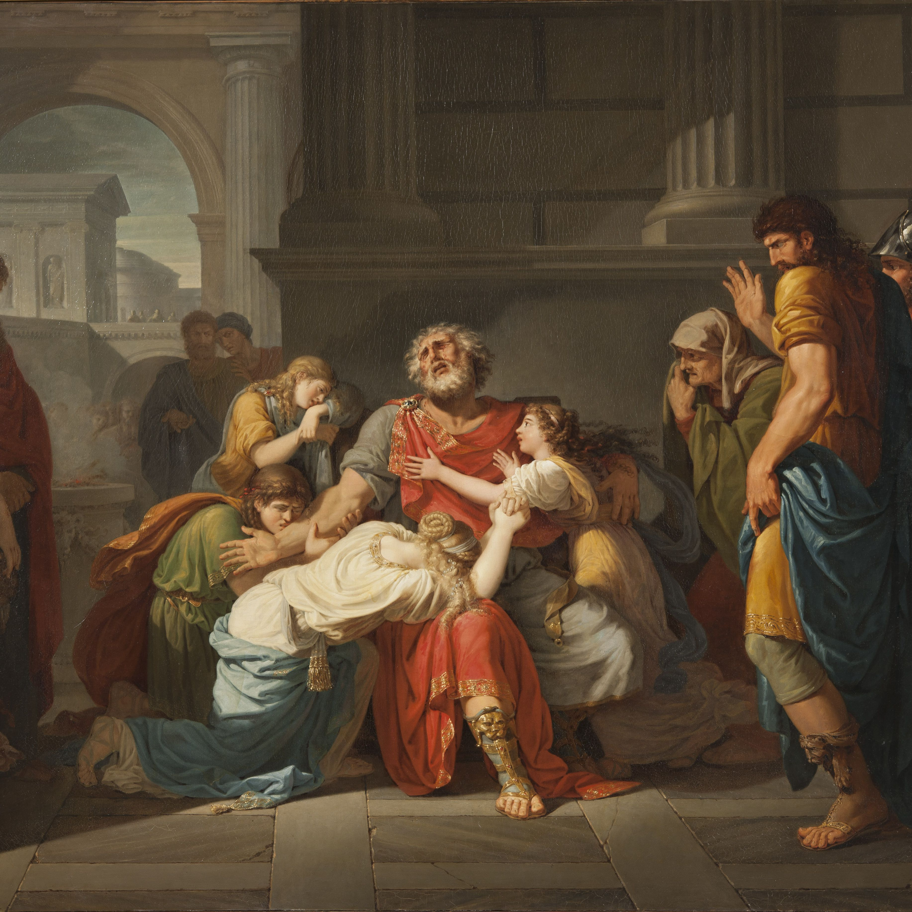

The Analysis of Hubris in Oedipus Rex’s Life
During the Greek Empire, cultural and religious aspects were highly important for the population. Religious and cultural elements reflected their identity in ancient time. In the midst of all of that, the Greek theater took advantage of this and started to use the available literary works to entertain the Greeks through the performances of tragic plays. One example of the most successful plays that delighted viewers in that context is Oedipus Rex by Sophocles. According to Sheehan, “Sophocles was a very successful playwright, writing at least 120 plays and winning the first prize nearly twenty times at the drama competitions for the City Dionysian festival”(2). The masterpieces of the writers during that ancient time in Greece used to explore themes around human nature in order to connect with the audience.
Sophocles’s play Oedipus Rex portrays the life of Oedipus, a man with such hubris, that it caused terrible consequences on his mental condition, his family, and his physical integrity.
Oedipus’s mental condition started to decline because hubris started to blind him. The mental disorder in the case Oedipus was just the beginning of the tragedy, which would lead him to take the path of self-destruction. In the next section of the play we can see an example of how Oedipus’s mind started to decline:
Gentlemen of the city, I have learned that
the tyrant Oedipus has spoken terrible
words against me, so I am here, unable
to bear it. If in our present distress
he thinks he has suffered at my hands,
then I have no desire for long life
If I must bear this reputation, for
its damaged affects no single part of my life,
rather the greatest part of it, if I am called
base in my city, base even by my friends. (538-547)
As was demonstrated in the text, the mental condition of the character had started to decline. The fact of speaking terrible words against Creon is a clear example of the poor condition he was passing through. On top of that, the king accused Creon of trying to overthrow him and wanted Creon to be murdered. It can be deduced from the story that somehow Oedipus Rex is also a victim of his own fate and the fulfillment of the prophecy. The way he started to act is a clear evidence of a mental disorder. In fact, it seems his imagination is acting in looking for people to blame for his own misfortune.
The consequences on family is also an aspect to analyze on this play because it was clearly showed in the plot. Hubris pushed Oedipus to the maximum limit by indirectly causing Jocasta’s death and the suffering of their children. The way Oedipus behaved during the story and how the truth was revealed after his insistence obligated Jocasta to commit suicide. The narration of Jocasta’s dead is narrated in the following portion of the play:
By herself! But, of what has been done the worst pain
you will avoid, for you cannot see it.
Still, as much as I can remember
of that poor woman’s woes you shall learn.
After she had gone into her chamber, frenzied,
she threw herself onto her bridal couch,
snatching at her hair with both hands. Bolting the doors
from the inside, she called on Laious, so long
a corpse, remembering that acient creation,
by which he himself died and left her, as mother,
to his offspring for their own evil brood.(1268-1278)
In Sophocles’s Oedipus Rex, Jocasta becomes a victim of the King’s hubris, leading her to kill herself. All the previous arguments, discussions, doubts, and questionings of Oedipus caused a terrible environment in that family. In addition, their offspring suffered after they realized the story, and of course it is highly likely that it traumatized them. Definitely, the character of Oedipus did not handle his hubris the best way, and it contributed to destroy his own family.
The last aspect to analyze is the consequence of hubris on his physical integrity. The hubris of Oedipus caused such severe spiritual and mental deterioration that he decided to gouge out his own eyes. This can be perceived by reading the next section of the play:
Oh, darkness!
This cloud of mine, abominable, approaching ineffable,
Unconquered, driven on by a fatally favorable wind.
Sorrow!
And still more sorrow—Upon me fall together
so many stingings goads and the memory of evils.(1343-1348)
This portion of the play shows the moment when Oedipus had already caused damage to himself. The sorrow he had in his soul was overwhelming and it seemed something difficult to overcome. The hubris he exhibited contributed to create trauma and disillusionment, by blocking the acceptance of guilt. Any possibility of forgiveness or reparation also disappeared after his hasty decision of damaging his eyes. Furthermore, Oedipus had to start dealing with the physical damages on his eyes apart from the serious psychological harm, not to mention that with the damage he caused to his own physical integrity, he finally lost his position of king who was highly praised in the town by becoming a highly dependent person.
In short, Oedipus Rex is a story that poses the negative consequences that hubris caused on the mind, family, and physical integrity of the King of Thebes. The play narrates a complex process that a person like Oedipus had to pass through, but that he could not overcome. Oedipus’s hubris definitely was the reason of his own destruction. Ironically, he had to give the Kingdom to his brother-in-law Creon, the person that had tried to help him since the beginning and that the King had mistreated. Although one could think that this is just an exaggerated story, it is a reality that in the past or present times some people show symptoms that may be related to hubris. Arrogance or excessive pride are part of human nature. The best one can desire for people who should suffer from those dangerous symptoms is to accept their responsibility and listen to pieces of advice given by others.